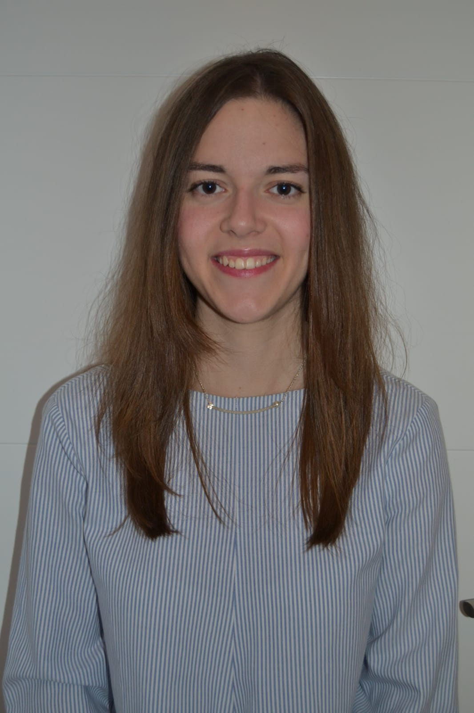

Variedades del español de América
Prof. ª Ruth Martín Mazón
Curso intensivo junio/julio 2019
Equipo docente
Perfil

- Profesora: Ruth Martín
- Formación: Filóloga hispánica, especialista en Lingüística, ELE y enseñanza en línea
- Teléfono de contacto: (+34) 636 616 381
- Email: ruthma@ucm.es
- Página personal: LinkedIn
Descripción general del curso
¿Qué es para ti el español?
El español llega a ser para nosotros como un licor que paladeamos y del cual no podemos ya prescindir. Prescindir en el ensayo, en la busca de todos sus escondrijos, de todas sus posibilidades, de todas sus puridades. Ya somos, con tanto beber de este licor, beodos del idioma. - Azorín
¿Qué vamos a estudiar?
Estudio sincrónico y diacrónico del español de América a través de la descripción y el análisis de las variedades dialectales del español hispanoamericano. A esto se suma, la geografía lingüística de dicho territorio.
¿Sabes el nombre de los paises de habla hispana?

¿Has acertado?
- Argentina.
- Bolivia.
- Chile.
- Colombia.
- Costa Rica.
- Cuba.
- Ecuador.
- El Salvador.
- Guatemala.
- Honduras.
- México.
- Nicaragua.
- Panamá.
- Paraguay.
- Perú.
- República Dominicana.
- Uruguay.
- Venezuela.
Objetivos didácticos
- Adquirir los conocimientos fundamentales sobre la variación lingüística del español de América.
- Iniciación en el estudio y en el conocimiento de la bibliografía básica del español de América.
- Conocimiento de los recursos para el análisis y el reconocimiento de la variación lingüística en el español de América.
Destinatarios
Alumnos de segundo año del grado en Español: Lengua y Literatura de la Universidad Complutense de Madrid.

Duración estimada

Se trata de un curso intensivo de verano (6 semanas) con una clase presencial de 3 horas los viernes de cada una de ellas.
Cronograma
| Semana | Días | Temario |
|---|---|---|
| 1 | 7 de junio | Intro + Bloque I |
| 2 | 14 de junio | Bloque II |
| 3 | 21 de junio | Bloque III |
| 4 | 28 de junio | Prácticas |
| 5 | 5 de julio | Bloque IV |
| 6 | 12 de julio | Examen |
Índice
Bloque I: Historia del español hispanoamericano
Los contenidos temáticos son:
- Periodización.
- Base lingüística y nivel sociolingüístico.
- Andalucismo y antiandalucismo.
- El voseo.
Bloque II: Fonética y Fonología
Los contenidos temáticos son:
- Vocalismo.
- Consonantismo.
- Particularidades fonológico-fonéticas.
Bloque III: Variación morfológica, sintáctica y léxica
Los contenidos temáticos son:
- Problemas generales.
- Variación morfológica, sintáctica y léxica.
Bloque IV: El español de EE.UU
Los contenidos temáticos son:
- Historia.
- Número de hablantes y distribución.
- Tipos de español.
- Contacto con el inglés.
- Futuro del español en EE.UU.
Competencias
Requisitos previos
- Haber superado con éxito el primer año del Grado en Español: Lengua y Literatura.
- Estar matriculado actualmente en la Universidad Complutense de Madrid.
Conocimientos propios del curso
Se dividen en dos:
- Generales
- Aquellos que se consideran de carácter global a la asignatura.
- Específicos
- Aquellos que se adquieren a medida que se avanza en el curso.
Conocimientos generales
- Dominio de la comunicación oral y escrita en español en diferentes situaciones y contextos.
- Capacidad para:
- Realizar un análisis crítico de textos en español.
- Evaluar información compleja mediante el uso de la tecnología.
- Desarrollar un trabajo interdisciplinar y en equipo o individual, para el diseño y la gestión de proyectos.
Conocimientos específicos
- Capacidad para reconocer, definir y caracterizar los rasgos fonéticos, morfosintácticos y léxicos del español de América.
- Análisis, síntesis e interpretación de los rasgos propios y diferenciadores del español de América.
- Saber utilizar adecuadamente las fuentes bibliográficas básicas.
Evaluación
Examen final
- Esta prueba se realizará de forma presencial y constará de dos partes:
- Fase teórica.
- Actividades.
Prácticas
Según lo estipulado en el cronograma, la cuarta semana se dedicará complementamente a la resolución de casos prácticos, por lo que al final de la clase se deberá entregar dicho guion de prácticas vía correo electrónico.
Referencias bibliográficas
Bibliografía obligatoria
| Título | Autor | Año de publicación |
|---|---|---|
| El español de América | Milagros Aleza | 2002 |
| Manual de dialectología | Manuel Alvar | 1997 |
| El español en América: Fonética | David Canfield | 1998 |
Bibliografía obligatoria (Cont.)
| Título | Autor | Año de publicación |
|---|---|---|
| Sintaxis hispanoamericana | Charles Kany | 1976 |
| La aventura del español en América | Umberto López | 1998 |
| Morfosintaxis y léxico hispanoamericano | María Vaquero | 1996 |
Bibliografía complementaria
| Título | Autor | Año de publicación |
|---|---|---|
| Estudios lingüísticos. Temas hispanoamericanos | Amado Alonso | 1953 |
| El Español de las Dos Orillas | Manuel Alvar | 1991 |
Recursos web
- Instituciones oficiales:
- Pronunciación: